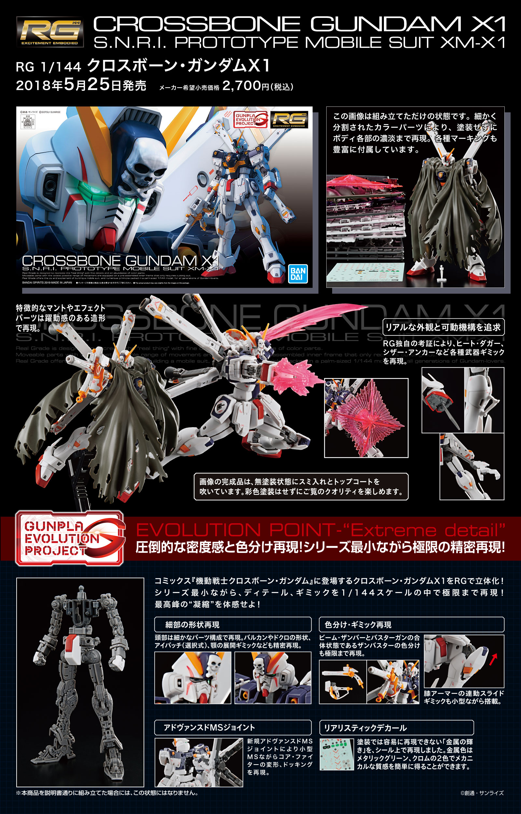

RG is 1:144, the same ratio as HG, the active joint is better. The parts are medium, the box is small, and there is a one-piece skeleton, but due to the small proportion, the skeleton is relatively fragile.
series of the 1:144 Gunpla line. These kits feature extensive detail and articulation, as well as a poseable skeletal frame comparable to the 1:100 Master Grade kits. The first RG kit was the 1:144 RX-78-2 Gundam, followed by the 1:144 MS-06S Char's Zaku II, GAT-X105 Aile Strike,[5] MS-06F Zaku II (Green), ZGMF-X10A Freedom. In 2011, Bandai released the Entry Grade (EG) line in Southeast Asia. Manufactured in China, the EG line contained fewer parts than the FG kits, thus having very limited articulation. Only four Gundams were released in the line. Press back to go back.